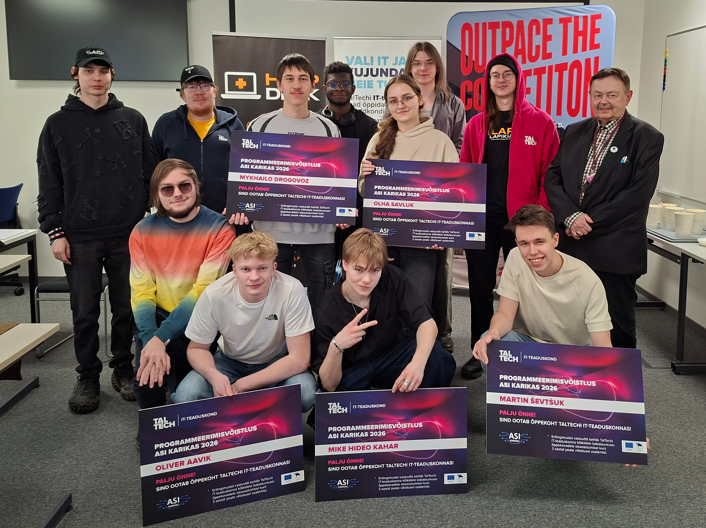

ASI KARIKAS 2026 KOKKUVÕTE
14. märtsil 2026 leidis aset Tallinna Tehnikaülikooli Mektory majas programmeerimisvõistluse ASI Karika 2026 finaal. Finaali oli kutsutud Gustav Adolfi Gümnaasiumi võistkond ja Tartu Rakendusliku Kolledži võistkond. Neile pakkus konkurentsi TalTechi etalontiim, mis koosnes IT-teaduskonna IT Süsteemide Arenduse õppekava 1. kursuse tudengitest: Oluwatobiloba Promise Temitope, Joosep Tomingas ja Aleksei Oja.
Finaali ülesandeks oli luua Pac-Mani laadne mäng, mille lahendamiseks võis kasutada ka AI tööriistu ja agente. Pärast 4 tundi ajude ragistamist oli aeg žüriil töid hinnata. Võitja valimisel vaadati koodi kvaliteeti ja arhitektuuri, mängu funktsionaalsust ning üldist muljet.
ASI Karika 2026 võitjateks osutusid Gustav Adolfi Gümnaasiumi võistkond koosseisuga Mike Hideo Kahar, Oliver Aavik ja Martin Ševtšuk.
Teise koha saavutasid Olha Savluk ja Mykhailo Drogovoz Tartu Rakenduslikust Kolledžist.
Peale auhindade pälvisid finalistid ka TalTechi IT-teaduskonna Talendipileti, mis võimaldab neil eritingimustel sisse astuda TalTechi IT-teaduskonna bakalaureuse õppekavadele.
Suured tänud ASI Karika 2026 võistluse toetajatele, kes aitasid võistlusele kaasa nii korralduse kui ka auhindadega: TalTech, TalTechi Töötajate Ametiliit, Mektory, Baskin Robbins, Zone ja Cybernetica.

Fotograaf: Karina Reisel
FINAALIDES OSALENUD KOOLID
- Gustav Adolfi Gümnaasium
- Miina Härma Gümnaasium
- Nõo Reaalgümnaasium
- Rocca al Mare Kool
- Tallinna Nõmme Gümnaasium
- Tallinna Reaalkool
- Tallinna Tehnikagümnaasium
- Tallinna Ühisgümnaasium
- Tartu Tamme Gümnaasium
- Tartu Jaan Poska Gümnaasium
- Tartu Rakenduslik Kolledž